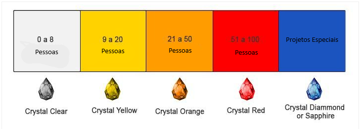

Metodologia Ágil Crystal
A metodologia Crystal faz parte de um conjunto de metodologias ágeis, focadas em pessoas e na comunicação direta entre elas.
Criada por Alistair Cockburn, a Crystal não é uma abordagem rígida com passos predeterminados, mas sim um conjunto de métodos que variam conforme o tamanho e a criticidade do projeto.
Os principais métodos dentro da família Crystal são Crystal Clear, Crystal Yellow, Crystal Orange, entre outros, cada um adaptado para diferentes cenários.
Componentes Humanos
O Crystal coloca uma ênfase muito forte nos componentes humanos, acreditando que o sucesso de um projeto depende mais das interações entre as pessoas do que de processos fixos.
As principais figuras envolvidas são:
Equipe de desenvolvimento: Pequenas equipes auto-organizadas são preferidas, pois permitem uma comunicação mais fluida.
Patrocinador ou Cliente: Trabalham diretamente com a equipe para garantir que as expectativas sejam compreendidas.
Líder de projeto: Em Crystal, o líder tem um papel facilitador, garantindo que a equipe tenha tudo que precisa, sem ser um "chefe" autoritário.
O ambiente de trabalho também é fundamental: Cockburn defende o uso de um espaço aberto, onde as pessoas possam colaborar facilmente.
Ferramentas como quadro Kanban ou até conversas presenciais frequentes são recomendadas para manter a clareza no que cada membro da equipe está fazendo.
Fases do Processo
A metodologia Crystal é relativamente simples quando comparada com outras metodologias ágeis, pois seu foco está mais na entrega contínua e na comunicação.
Em geral, as fases do processo incluem:
Iniciação: Definição dos objetivos do projeto e formação da equipe. Nesta fase, a equipe identifica os requisitos principais e define um plano inicial.
Entrega por ciclos curtos: O projeto é entregue em ciclos rápidos e curtos, que são ajustados conforme o feedback dos usuários ou clientes.
Feedback constante: Ao final de cada ciclo, a equipe recebe feedback do cliente, o que ajuda a ajustar o projeto e adaptar o desenvolvimento conforme as necessidades reais.
Refinamento e Finalização: Os ciclos são repetidos até que o produto esteja pronto para ser entregue de forma definitiva, garantindo que os requisitos principais tenham sido atendidos.
Crystal Clear e Outras Variantes
Crystal Clear: Projetos com até 6 pessoas, de baixa criticidade. A comunicação direta elimina a necessidade de documentação extensa.
Crystal Yellow: Para equipes de médio porte (7 a 20 pessoas) e criticidade moderada, com mais necessidade de organização.
Crystal Orange: Projetos maiores (até 50 pessoas), com criticidade mais alta. Exige mais controle e formalidade na gestão.
Crystal Red: Projetos muito grandes, que podem envolver até 200 pessoas. Devido à complexidade e ao nível de criticidade, são necessários mais processos de controle e documentação.
Crystal Diamond: Voltado para sistemas críticos e de grande escala, geralmente em áreas onde falhas podem ter consequências severas, como sistemas de saúde ou aeronáuticos.
Aqui, a metodologia exige altos níveis de controle e comunicação rigorosa.

Vantagens
Foco nas pessoas: A metodologia prioriza a comunicação e a interação entre os membros da equipe, promovendo um ambiente colaborativo.
Flexibilidade: Cada variante da metodologia é ajustada para diferentes tamanhos e criticidades de projeto, oferecendo adaptabilidade conforme as necessidades.
Entrega contínua: A entrega iterativa permite que o cliente veja resultados rapidamente e faça ajustes ao longo do desenvolvimento.
Desvantagens
Falta de estrutura clara: Justamente por ser tão flexível, pode ser difícil de aplicar em projetos maiores ou equipes menos experientes.
Dependência da equipe: Como há menos regras, o sucesso depende fortemente da disciplina e competência da equipe.
Menor popularidade: Comparado com outras metodologias como Scrum e Kanban, o Crystal é menos difundido, o que pode limitar o acesso a recursos e treinamentos.
Essas características tornam o Crystal uma opção interessante para equipes pequenas e projetos que demandam agilidade sem grandes formalidades.